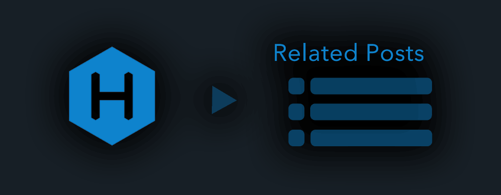

A hexo plugin that generates a list of links to related posts or popular posts.
DEMO | Wiki | Documents | Releases(Update)

If you are using an older hexo version, please use the follows version.
For example, if you using prior to hexo v5.0 now, please npm install hexo-related-popular-posts@4.2.0.
| hexo version | this plugin version |
|---|---|
| v3.2 or later | 2.0.6 |
| prior to v5.0 | 4.0.0 |
Generate related list of posts.
Sort and extracted by relevance of tags and word relevance of contents.
Generate popular list of posts.
Sort and extract in Google Analytics page view.
Generate Page Views information in posts.
Gets and displays the Google Analytics page view.
$ npm install hexo-related-popular-posts --save
If you occur ERROR Plugin load failed: error or DTraceProviderBindings.node error , please see below.
First, add the following popular_posts( {} , post ) helper tag in template file for article. For example , if you use hexo-theme-landscape , add a tag here.
<%-
popular_posts( {} , post )
%>
Variable name post is different depending on theme. Helper tag can set more option and customize the design . For detail , please see the wiki.
Also , if you occur Cannot read property 'tags' of undefined error , please refer to the follow as.
If tags are included in the article, related articles can be displayed as a list. For example, add a tag like the following markdown file.
---
title: Hello World
tags:
- program
- diary
- web
---
Welcome to [Hexo](https://hexo.io/)! This is a sample article. Let's add some tags as above.
...
The larger the number of matching tags, the more relevant articles are displayed as candidates. Otherside , advanced related posts and popular posts can be displayed. Please see the wiki .
Starts a local server. By default, this is at http://localhost:4000/.
$ hexo clean
$ hexo server
MIT